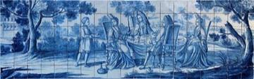
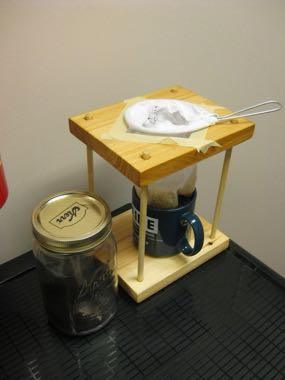
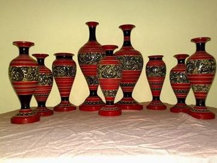
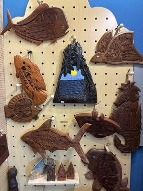
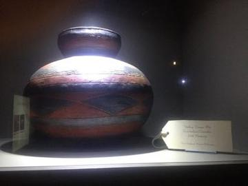
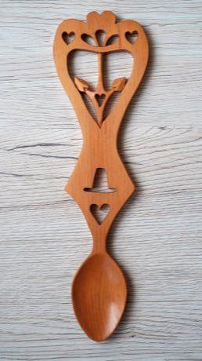

Living Traditions 51

Ambalangoda mask carving
Sri Lanka · Crafts and making
Aranmula metal mirror
Worldwide · Crafts and making
Azulejo tile painting
Portugal · Crafts and making
Bankura terracotta horse
Bangladesh · Crafts and making
Bidriware silver inlay
Worldwide · Crafts and making
Blacksmith's Forge
United Kingdom +4 · Crafts and making
Bolesławiec Stamped Pottery
Poland · Crafts and making
Bulgarian Painted Pottery
Bulgaria · Crafts and making
Burmese lacquerware engraving
Myanmar · Crafts and making
Channapatna lacquer toys
Worldwide · Crafts and making
Chorreador
Costa Rica · Crafts and making
Damascus Mother-of-Pearl Inlay
Syria · Crafts and making
Dhokra lost-wax casting
Bangladesh · Crafts and making
Glassblowing
Italy · Crafts and making
Goryeo Celadon Inlay
South Korea +1 · Crafts and making
Horezu ceramics
Romania · Crafts and making
Iznik tile painting
Turkey · Crafts and making
Jaipur blue pottery painting
India · Crafts and making
Khatam inlay star pattern workshop
Iran · Crafts and making

Kisii soapstone carving
Worldwide · Crafts and making
Kissi Penny Forging
Guinea +2 · Crafts and making
Kondapalli village toys
Worldwide · Crafts and making
Krobo Powder-Glass Beads
Ghana · Crafts and making
Leaded Glass Window Making
Japan · Crafts and making
Lost-Wax Bronze Casting
Japan +2 · Crafts and making
Makonde ebony carving
Tanzania +1 · Crafts and making
Maldivian lacquer work
Maldives · Crafts and making
Omani Khanjar Silver Filigree
Oman · Crafts and making
Palauan storyboard carving
Palau · Crafts and making
Pamiri House Ceiling Raiser
Tajikistan · Crafts and making

Rishtan ceramics
Uzbekistan · Crafts and making
Seal carving
China · Crafts and making
Sholapith flower carving
Bangladesh · Crafts and making
Shona stone sculpture carving
Zimbabwe · Crafts and making
Shophouse facade builder
Singapore +2 · Crafts and making
Skrabalai
Lithuania · Musical instruments
Swahili carved door
Kenya · Crafts and making
Swazi carved figures and craft market
Eswatini · Crafts and making
Talavera tile painting
Mexico · Crafts and making
Tarakasi silver filigree
Worldwide · Crafts and making
Tessellated Mosaic Making
Italy +1 · Crafts and making
Thai fruit and vegetable carving
Thailand · Crafts and making
Tuareg Tea
Niger · Crafts and making
Turkmen Silver Jewelry Designer
Turkmenistan · Crafts and making
Txalaparta Duet
Spain · Musical instruments
Ukiyo-e Woodblock Printing
Japan · Crafts and making
Valley Tonga coil pottery
Tonga +1 · Crafts and making
Welsh Love Spoon Carving
United Kingdom · Crafts and making
Zellij tile mosaic
Morocco · Crafts and making